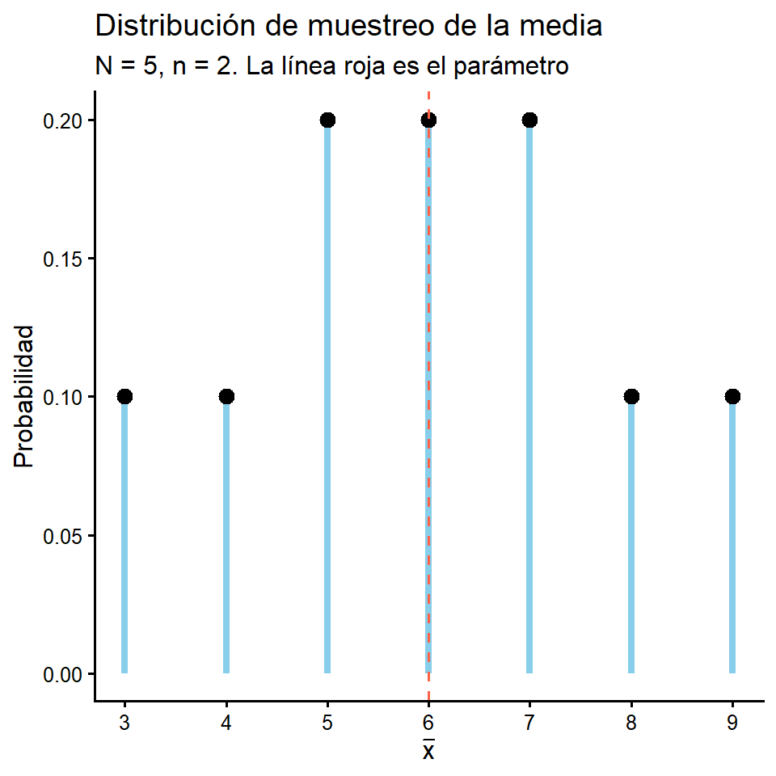
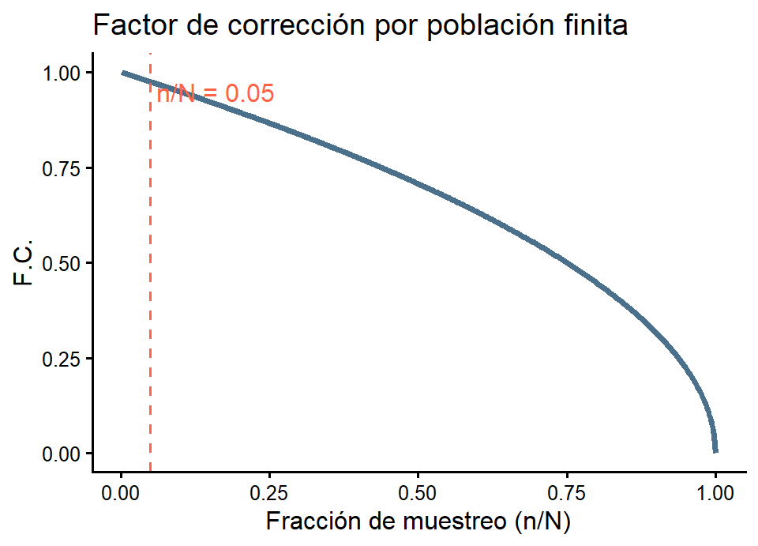
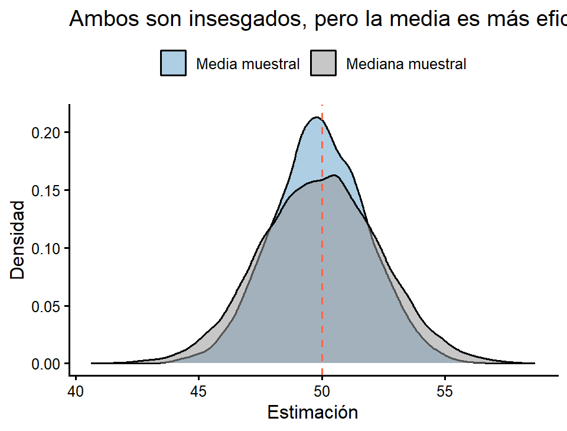
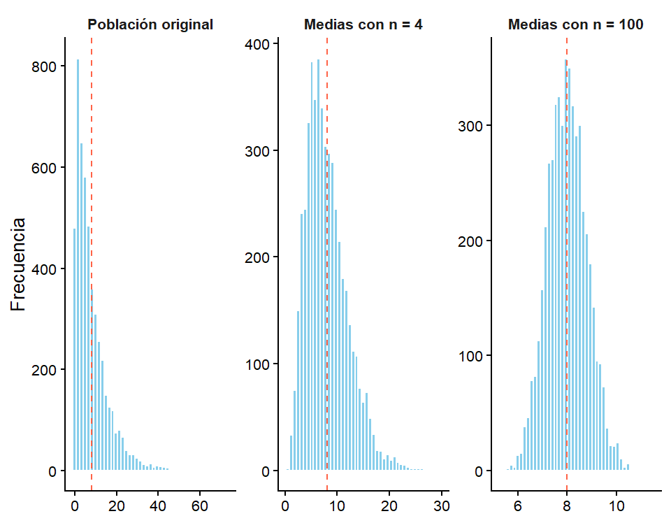

[1] 0 1 1 1 0 0 1 1 1 1 1 1 1 1 1 1 1 1 1 0 1 1 1 1 1 1 0 0 1 1 1 1 0 1 1 1 1 0
[39] 1 1 1 1 1 1 1 1 1 1 1 1 1 1 1 0 1 1 1 1 1 1[1] 0.85[XS-1130 Principios de Inferencia]
Estadística descriptiva
Resume y describe conjuntos de datos mediante medidas sintéticas: tasas, índices, porcentajes, promedios.
No hay incertidumbre: se describe lo que se observó.
Estadística inferencial
Realiza generalizaciones acerca de una población utilizando solamente una parte de ella.
Sí hay incertidumbre: hay que cuantificarla.
Importante
Este tema es el puente entre ambas. Vamos a tomar un resumen descriptivo (un promedio muestral, una proporción muestral) y a convertirlo en una afirmación sobre la población, acompañada de una medida del error.
Tres conceptos que no deben confundirse
Parámetro (o valor poblacional): valor que representa, describe o resume una característica de la población. Generalmente es desconocido y fijo.
Estimador: sean \(X_1, X_2, \dots, X_n\) los valores de una variable \(X\) en los \(n\) elementos de una muestra aleatoria. Un estimador es una función \(\hat{\theta} = g(X_1, \dots, X_n)\) que se utiliza para aproximar el parámetro. Es una variable aleatoria.
Estimación: el valor numérico que toma el estimador al evaluarlo en una muestra concreta. Es un número.
| Parámetro | Estimador | Estimación | |
|---|---|---|---|
| Media | \(\mu\) | \(\bar{X} = \frac{1}{n}\sum X_i\) | \(\bar{x} = 68.4\) kg |
| Proporción | \(P\) | \(\hat{p} = \frac{X}{n}\) | \(\hat{p} = 0.80\) |
| Varianza | \(\sigma^2\) | \(S^2 = \frac{\sum (X_i-\bar{X})^2}{n-1}\) | \(s^2 = 12.5\) |
Población (letras griegas o mayúsculas)
Muestra (letras latinas minúsculas)
Nota
Ejemplo 1. Población: todas las personas electoras costarricenses en una fecha determinada. Característica de interés: la intención de voto. Valor poblacional: la proporción poblacional \(P\) de electores a favor del candidato A (Es una población finita).
Ejemplo 2. Población: todas las personas que han vivido, viven y vivirán en un país. Característica: el nivel de colesterol al nacer. Valor poblacional: el promedio poblacional \(\mu\) (Es una población infinita).
En una facultad hay 240 profesores y profesoras. Se tomó una muestra aleatoria de 60 y se le preguntó a cada uno si había votado en la última elección de decanatura. Respondieron afirmativamente 51 personas.
Solución
Parámetro: \(P\), la proporción de los 240 profesores que votaron. Es desconocido.
Estimador: \(\hat{p} = \frac{\sum_{i=1}^{n=60} I_{éxito_i} }{n}\), donde \(I_{éxito_i}\) es una variable indicadora, que es 1 si la persona pertenece a la categoría de éxito (votar) o 0 si la persona pertenece a la categoría de fracaso (no votar).
Estimación: \(\hat{p} = \dfrac{51}{60} = 0.85\), es decir, un 85%.
Preguntas que motivan la idea:
Definición
Como el estimador cambia de una muestra a otra, es una variable aleatoria, y por lo tanto tiene asociada una función de probabilidad.
La distribución de muestreo de un estimador es la distribución de probabilidad de todos los valores que puede tomar ese estimador, considerando todas las muestras posibles del mismo tamaño.
En particular, la distribución de todas las medias muestrales posibles se llama distribución de muestreo de la media.
Sea una población de \(N = 5\) fincas con producción, en toneladas:
\[y_1 = 2, \quad y_2 = 4, \quad y_3 = 6, \quad y_4 = 8, \quad y_5 = 10\]
\[\mu = \frac{2+4+6+8+10}{5} = 6 \qquad \qquad S^2 = \frac{16+4+0+4+16}{5-1} = 10\]
Con muestreo simple al azar sin reemplazo y \(n = 2\) hay \(\binom{5}{2} = 10\) muestras posibles, todas con probabilidad \(1/10\):
| Muestra | \(\{1,2\}\) | \(\{1,3\}\) | \(\{1,4\}\) | \(\{1,5\}\) | \(\{2,3\}\) | \(\{2,4\}\) | \(\{2,5\}\) | \(\{3,4\}\) | \(\{3,5\}\) | \(\{4,5\}\) |
|---|---|---|---|---|---|---|---|---|---|---|
| valores | 2,4 | 2,6 | 2,8 | 2,10 | 4,6 | 4,8 | 4,10 | 6,8 | 6,10 | 8,10 |
| \(\bar{x}\) | 3 | 4 | 5 | 6 | 5 | 6 | 7 | 7 | 8 | 9 |
Agrupando los valores repetidos:
| \(t\) | \(P(\bar{X}=t)\) |
|---|---|
| 3 | 1/10 |
| 4 | 1/10 |
| 5 | 2/10 |
| 6 | 2/10 |
| 7 | 2/10 |
| 8 | 1/10 |
| 9 | 1/10 |
\(\small \sum P = 1 \;\checkmark\)

Aplicando las definiciones ya conocidas de esperanza y varianza:
\[E(\bar{X}) = \sum_t t\,P(\bar{X}=t) = \frac{3+4+2(5)+2(6)+2(7)+8+9}{10} = \frac{60}{10} = 6 = \mu\]
\[E(\bar{X}^2) = \frac{9+16+2(25)+2(36)+2(49)+64+81}{10} = \frac{390}{10} = 39\]
\[\operatorname{Var}(\bar{X}) = E(\bar{X}^2) - [E(\bar{X})]^2 = 39 - 36 = 3\]
Importante
Dos hechos fundamentales que acabamos de verificar en un caso concreto:
El promedio de todas las estimaciones posibles coincide con el parámetro: el estimador es insesgado.
La distribución de muestreo tiene mucha menos dispersión que la población original (\(S^2 = 10\) frente a \(\operatorname{Var}(\bar X)=3\)).
Definición
El error estándar de un estimador es la desviación estándar de su distribución de muestreo:
\[ee(\hat{\theta}) = \sqrt{\operatorname{Var}(\hat{\theta})}\]
Mide cuánto varía típicamente la estimación de una muestra a otra. Es la medida del error de muestreo.
En el ejemplo anterior: \(ee(\bar{X}) = \sqrt{3} = 1.7321\) toneladas.
Nota
No confundir:
El segundo es siempre menor, y disminuye conforme crece \(n\).
La fórmula del error estándar depende del diseño de muestreo utilizado:
Muestreo simple al azar CON reemplazo (o población infinita)
\[\operatorname{Var}(\bar{X}) = \frac{\sigma^2}{n} \qquad \Longrightarrow \qquad ee(\bar{X}) = \frac{\sigma}{\sqrt{n}}\]
Muestreo simple al azar SIN reemplazo (población finita)
\[\operatorname{Var}(\bar{X}) = \frac{\sigma^2}{n}\cdot\frac{N-n}{N-1} \qquad \Longrightarrow \qquad ee(\bar{X}) = \frac{\sigma}{\sqrt{n}}\sqrt{\frac{N-n}{N-1}}\]
Importante
Al término \(\sqrt{\dfrac{N-n}{N-1}}\) se le llama factor de corrección por población finita (F.C.).
¿Cuándo se aplica el F.C.?
El factor de corrección multiplica al error estándar y se utiliza cuando se cumplen estas condiciones:
Si \(n/N \le 0.05\) el factor es tan cercano a 1 que se omite.
Comportamiento del factor:

\(\small \text{A la izquierda de la línea roja el factor vale prácticamente 1: por eso se omite cuando } n/N \le 0.05.\)
Nota
El error estándar también cambia con el diseño muestral elegido. Con el mismo tamaño de muestra \(n\):
| Diseño | Efecto sobre \(ee(\bar{X})\) |
|---|---|
| Simple al azar sin reemplazo | Referencia |
| Estratificado | Menor (se elimina la variabilidad entre estratos) |
| Conglomerados | Mayor (las unidades del conglomerado se parecen) |
| Sistemático | Depende del orden de la lista |
Todas las fórmulas de este tema suponen muestreo simple al azar. Con diseños complejos hay que usar las fórmulas propias del diseño; usar las del muestreo simple subestima el error estándar.
Para resolver ahora
Una población consta de \(N = 4\) hogares cuyos ingresos mensuales, en cientos de miles de colones, son: \(3,\; 5,\; 7,\; 9\).
Insesgamiento
Al calcular el estimador para todas las muestras posibles y promediar esos valores, el resultado coincide con el valor poblacional:
\[E(\hat{\theta}) = \theta\]
Si \(E(\hat{\theta}) \neq \theta\), la diferencia \(B(\hat\theta) = E(\hat{\theta}) - \theta\) se llama sesgo.
Consistencia
El estimador se aproxima al parámetro conforme aumenta el tamaño de muestra:
\[\hat{\theta}_n \; \longrightarrow \; \theta \qquad \text{cuando } n \to \infty\]
En la práctica basta verificar que sea insesgado (o de sesgo que tienda a cero) y que \(\operatorname{Var}(\hat{\theta}_n) \to 0\).
Suficiencia
Un estimador es suficiente si para su cálculo utiliza toda la información de la muestra, de modo que ningún otro estimador puede extraer información adicional sobre el parámetro.
Se refiere a qué tan bien el estimador aprovecha los datos disponibles.
Eficiencia (varianza mínima)
Si se comparan dos estimadores insesgados calculados sobre muestras del mismo tamaño, es más eficiente aquel que tenga menor error estándar, es decir, menor varianza en su distribución de muestreo:
\[\hat{\theta}_1 \text{ es más eficiente que } \hat{\theta}_2 \iff \operatorname{Var}(\hat{\theta}_1) < \operatorname{Var}(\hat{\theta}_2)\]
En una población simétrica (ejemplo distribución \(Normal(\mu, \sigma^2)\) ambos estimadores (La media muestral y la mediana muestral) son insesgados para \(\mu\), pero no son igual de precisos:
esperanza ee
Media 49.9599 1.9963
Mediana 49.8984 2.4970
Un estimador puede fallar por dos razones distintas. Ambas se resumen en:
\[ECM(\hat{\theta}) = E\left[(\hat{\theta}-\theta)^2\right] = \underbrace{\operatorname{Var}(\hat{\theta})}_{\text{dispersión}} + \underbrace{\left[E(\hat{\theta})-\theta\right]^2}_{\text{sesgo}^2}\]
Importante
Aumentar \(n\) reduce la varianza pero no elimina el sesgo. Por eso un mal diseño muestral no se arregla con una muestra grande.
Para resolver ahora
Una cooperativa tiene \(N = 5\) fincas cuya producción anual, en toneladas, es:
\[\small 4, \quad 6, \quad 8, \quad 10, \quad 12\]
Se tomará una muestra simple al azar sin reemplazo de \(n = 3\) fincas. Sean \(X_1\), \(X_2\) y \(X_3\) la primera, la segunda y la tercera finca extraída. Se proponen tres estadísticos para estimar la producción promedio \(\mu\):
\[\small \hat\theta_1 = \bar{X} \qquad \hat\theta_2 = \frac{\max + \min}{2}\]
Calcule \(\small \mu\) y \(\small S^2\).
Note que \(\hat\theta_1\) y \(\hat\theta_2\). Complete para ellos la tabla de la lámina siguiente, que recoge las \(\small \binom{5}{3}\) muestras posibles.
Calcule \(\small E(\hat\theta_1)\) y \(\small E(\hat\theta_2)\). ¿Son insesgados?
Sabiendo que \(\small \operatorname{Var}(\hat\theta_1) = 1.33\) y \(\small \operatorname{Var}(\hat\theta_2) = 1.2\), ordene los estimadores por eficiencia.
\(\small \hat\theta_2\) solo utiliza 2 de las 3 observaciones, así que no es suficiente. Sin embargo resultó competitivo. Explique a qué se debe. (Razone cuándo funciona promediar los extremos).
| Muestra | Valores | \(\hat\theta_1 = \bar{X}\) | \(\hat\theta_2 = \frac{\max+\min}{2}\) |
|---|---|---|---|
| 1 | 4, 6, 8 | 6 | 6 |
| 2 | 4, 6, 10 | 6.67 | 7 |
| 3 | 4, 6, 12 | ||
| 4 | 4, 8, 10 | ||
| 5 | 4, 8, 12 | ||
| 6 | 4, 10, 12 | ||
| 7 | 6, 8, 10 | ||
| 8 | 6, 8, 12 | ||
| 9 | 6, 10, 12 | ||
| 10 | 8, 10, 12 | ||
| Promedio |
Definición
El objetivo de la estimación puntual es proporcionar un número único, un punto en el eje real, que esté cerca con alta probabilidad del valor desconocido del parámetro.
Características:
Solo hay dos posibilidades: la estimación es correcta o es incorrecta. Y como el parámetro es un número real desconocido, la probabilidad de acertar exactamente es prácticamente nula.
No comunica cuán precisa es la estimación: el número 51.5 no dice nada sobre si el error típico es de 0.1 o de 20 unidades.
Por eso siempre se recomienda acompañarla de una estimación del error .
Ejemplos: el promedio muestral del peso de un grupo de estudiantes; la varianza muestral; la proporción muestral de personas a favor de una reforma.
Definición
Una estimación por intervalo es un rango de valores construido a partir de la muestra, que con una confianza determinada contiene al parámetro.
\[\text{Intervalo} = \text{estimador} \; \pm \; d\]
donde \(d\) es el error de muestreo o margen de error.
El intervalo queda definido por dos valores: el límite inferior de confianza (LIC) y el límite superior de confianza (LSC).
Ejemplo: Estimo que el peso promedio de los estudiantes está entre 50 y 100 kilogramos.
Importante
El valor de \(d\) depende del tipo de estimación por intervalo: cambia según el parámetro, según la distribución que se use y según el diseño de muestreo.
El error tiene siempre la misma estructura:
\[\Large d = \underbrace{(\text{valor crítico})}_{\text{depende de la confianza}} \times \underbrace{ee(\hat{\theta})}_{\text{depende del diseño y de } n}\]
El valor crítico proviene de una distribución (normal estándar, t de Student, ji-cuadrado, F) y está asociado a una probabilidad.
Esa probabilidad determina la proporción de muestras posibles en las que el intervalo contendrá al parámetro. Esa proporción es el nivel de confianza, denotado \(1-\alpha\).
Visualmente:
https://seeing-theory.brown.edu/frequentist-inference/es.html
Lo que SÍ significa
Si se repitiera el procedimiento de muestreo un número grande de veces y en cada muestra se construyera el intervalo, aproximadamente el 95% de esos intervalos contendría al parámetro.
La confianza es una propiedad del procedimiento, no de un intervalo en particular.
Lo que NO significa
Incorrecto: “la probabilidad de que \(\mu\) esté entre 49.1 y 53.9 es 0.95”. Una vez calculado el intervalo, \(\mu\) está o no está: no hay aleatoriedad, la probabilidad es 0 o 1.
Incorrecto: “el 95% de los datos está en el intervalo”. El intervalo estima la media, no describe la dispersión de los datos.
Incorrecto: “el 95% de las muestras futuras dará una media dentro de este intervalo”.
| Estimación puntual | Estimación por intervalo | |
|---|---|---|
| Resultado | Un número | Un rango de valores |
| Informa la precisión | No | Sí, mediante la amplitud |
| Probabilidad de acertar | Prácticamente nula | Controlada por \(1-\alpha\) |
| Requiere conocer la distribución de muestreo | No para calcularla | Sí |
| Uso típico | Reportar el mejor valor único | Cuantificar la incertidumbre |
Nota
No son sustitutos, son complementarios. Todo reporte serio incluye ambos: la estimación puntual como mejor valor y el intervalo como medida del error. En una encuesta se dice “un 42% apoya la reforma, con un margen de error de \(\pm\) 3 puntos porcentuales al 95% de confianza”.
La amplitud del intervalo es \(A = 2d\) y resume la precisión de la estimación. Depende de tres factores:
\[A = 2 \cdot z_{1-\alpha/2}\cdot \frac{\sigma}{\sqrt{n}}\]
Los tres factores
La confianza \(1-\alpha\): a mayor confianza, mayor valor crítico y más ancho el intervalo. Estar más seguro cuesta precisión.
La variabilidad \(\sigma\): poblaciones más heterogéneas producen intervalos más anchos.
El tamaño de muestra \(n\): aparece en la raíz, así que para reducir la amplitud a la mitad hay que cuadruplicar \(n\).
Para construir un intervalo necesitamos conocer la distribución de muestreo del estimador. Pero:
Advertencia
La distribución de la población suele ser desconocida.
Enumerar todas las muestras posibles es inviable.
Teorema del Límite Central (TLC)
Sean \(X_1, X_2, \dots, X_n\) variables aleatorias independientes e idénticamente distribuidas, con \(E(X_i)=\mu\) y \(\operatorname{Var}(X_i)=\sigma^2 < \infty\) (Media \(\mu\) y varianza \(\sigma^2\) finita). Entonces, cuando \(n \to \infty\):
\[\Large Z = \frac{\bar{X}-\mu}{\sigma/\sqrt{n}} \;\; \longrightarrow \;\; N(0,1)\]
De forma equivalente, para \(n\) suficientemente grande:
\[\bar{X} \;\; \dot\sim \;\; N\!\left(\mu, \; \frac{\sigma^2}{n}\right)\]
Importante
Este resultado es muy fuerte e importante, pero hay que comprenderlo bien.
Tres consecuencias
Permite hacer inferencia sobre \(\mu\) sin saber nada sobre la forma de la distribución de la población. Basta con que tenga media y varianza finitas.
Justifica que la mayoría de los intervalos y pruebas del curso usen la distribución normal, aunque los datos originales sean asimétricos, discretos o acotados.
Es la base para la inferencia sobre la proporción, ya que \(\hat{p}\) es en realidad un promedio de ceros y unos.
¿Qué tan grande debe ser \(n\)?
| Forma de la población | Tamaño requerido |
|---|---|
| Normal | Cualquier \(n\) (el promedio de observaciones normales es normal) |
| Simétrica y unimodal | \(n \ge 15\) suele bastar |
| Moderadamente asimétrica | \(n \ge 30\) |
| Muy asimétrica o con valores extremos | \(n > 50\), a veces más |
En la práctica suele definirse \(n>30\) como muestra grande. Un buen estadístico comprende que esto no es necesariamente cierto, depende de la forma de la distribución en la población.
Caso 1: población normal (cualquier n)
Si \(X \sim N(\mu, \sigma^2)\), entonces para cualquier \(n\):
\[\bar{X} \sim N\!\left(\mu, \frac{\sigma^2}{n}\right) \qquad \text{exactamente}\]
No se necesita el TLC: es una propiedad de la distribución normal.
Caso 2: población no normal, (muestra grande)
Por el TLC: \(\;\bar{X} \;\dot\sim\; N\!\left(\mu, \frac{\sigma^2}{n}\right)\) de manera aproximada.
Caso 3: población no normal, (muestra pequeña)
No hay resultado disponible. Hay que recurrir a métodos no paramétricos o de remuestreo.
Partimos de una población muy asimétrica y observamos qué ocurre con la media muestral:
media desv
7.994383 7.993400 media ee
n4 8.0452 4.0031
n100 7.9926 0.7992
La población es exponencial, pero la distribución de las medias se vuelve simétrica y acampanada, y cada vez más concentrada conforme el tamaño de muestra aumenta.
Sea \(X\) el número de éxitos en \(n\) ensayos independientes con probabilidad \(P\). Entonces \(X \sim Bin(n, P)\) y la proporción muestral es
\[ \hat{p} = \frac{\sum_{i=1}^{n} I_{\text{éxito}_i}}{n} \quad \text{donde} \quad I_{\text{éxito}_i} = \begin{cases} 1, & \text{si el elemento } i \text{ presenta el éxito} \\ 0, & \text{si presenta el fracaso} \end{cases} \]
es decir, un promedio de ceros y unos. Aplicando las propiedades de la esperanza y la varianza:
\[E(\hat{p}) = P \qquad \operatorname{Var}(\hat{p}) = \frac{P(1-P)}{n}\]
Consecuencia del TLC
\[\hat{p} \;\; \dot\sim \;\; N\!\left(P, \; \frac{P(1-P)}{n}\right) \qquad \Longrightarrow \qquad ee(\hat{p}) = \sqrt{\frac{P(1-P)}{n}}\]
Condición práctica: la aproximación es aceptable si \(\;n\hat{p} \ge 10\;\) y \(\;n(1-\hat{p}) \ge 10\).
esperanza_simulada valor_de_P
0.2997 0.3000 ee_simulado ee_teorico
0.05084763 0.05123475 n_p n_q
24 56 Para resolver ahora
El tiempo de atención en una sucursal bancaria tiene media \(\mu = 240\) segundos y desviación estándar \(\sigma = 60\) segundos. La distribución no es normal: es asimétrica a la derecha. Se toma una muestra aleatoria de 100 clientes.